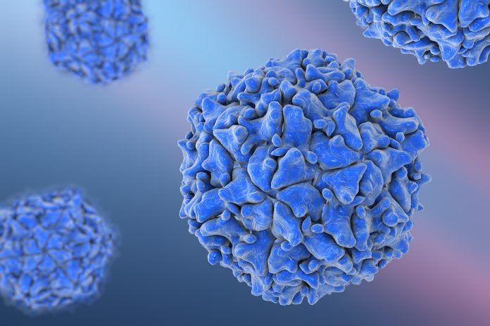

Polio
Polio is a highly infectious disease caused by RNA enterovirus, which means that it can survive in gastrointestinal tract. There are three types of polio (1, 2, and 3). You do not get immunity to all forms of polio if you have immunity to one type of polio (no cross-protection). The polio virus is spread through oral transmission. Infection with the polio virus does not lead to paralysis and most people are asymptomatic (about 72%). Others feel mild cold like symptoms. Less than 1% results in paralysis. However, this can lead to disability in the future if a full recovery is not made. Polio is nearly eradicated throughout the world. In 2012 there were only 223 cases of polio in the world.

There were two types of polio vaccines developed: oral polio vaccine (OPV) and inactivated polio vaccine (IPV). Oral polio vaccine is a live polio vaccine that cannot cause disease. However, in very rare instances it can cause vaccine-associated paralytic polio (VAPP). Because of the incidence of VAPP, OPV has been discontinued in the US. IPV is the only polio vaccine used in the US after OPV was discontinued in 2000. Therefore, there is now NO risk of VAPP in the US. IPV contains the inactivated form of all types of polio viruses. IPV is extremely effective: after two doses it is 90% effective, and 99% effective after 3 doses. It is now recommended that children are vaccinated with IPV when they are 2, 4 and 6 months old. The fourth and final dose should be given at around the age of 4.
Adapted From:
1. Centers for Disease Control and Prevention. (2015). Poliomyelitis. In Hamborsky J., Kroger A., Wolfe S., (Eds.), Epidemiology and Prevention of Vaccine-Preventable Diseases (13th ed., 297-310). Washington D.C. Public Health Foundation.
Image from: http://doctorbeau.com/doctors-use-polio-virus-to-kill-off-cancer-tumor/